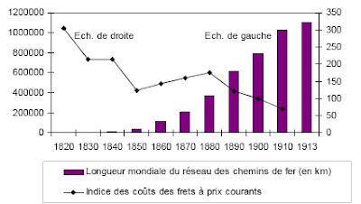
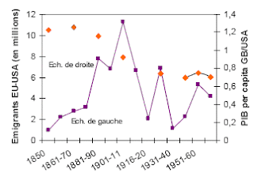
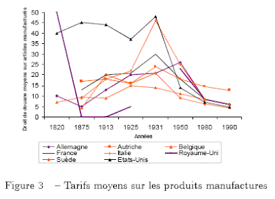

2010-01-01
« Les armées de Napoléon se déplaçaient à la même vitesse que celles de Jules César » Paul Valéry
Comme l’illustre cette citation, l’histoire des transports est souvent perçue comme étant une longue et lente évolution jusqu’au début du 19ème siècle, puis les révolutions technologiques s’enchaînent entraînant une mobilité plus grande des personnes et des biens.
Pour illustrer cette évolution rapide, nous allons présenter graphiques et statistiques, mais avant cela un bref résumé du récit d’un des “Voyages Extraordinaires” de Jules Vernes peut nous aider à comprendre le laps de temps très court séparant la fiction de la réalité.
Dans le dixième des Voyages extraordinaires, Phileas Fogg part de Londres le 2 octobre 1872, il traverse la Manche, prend le train à Calais, transite par Paris et descend l’Italie jusqu’à Brindisi. Il traverse ensuite la Méditerranée puis atteint la Mer Rouge par le très récent canal de Suez (1), de là Fogg met 11 jours pour atteindre Bombay. Le voyage de Bombay à Calcutta aurait dû se faire en 3 jours, mais la ligne de chemin de fer n’étant pas terminée, l’aventurier mettra deux jours de plus à dos d’éléphant.
| Villes | Londres | Suez | Bombay | Calcutta | Hong Kong | Yokohama | San Francisco | New York | Londres |
|---|---|---|---|---|---|---|---|---|---|
| Dates | 02-oct | 09-oct | 20-oct | 25-oct | 07-nov | 14-nov | 03-déc | 10-déc | 20-déc |
En partance de Calcutta et en l’espace de 39 jours Fogg atteint Hong Kong par paquebot, puis Yokohama en goélette et traverse le Pacifique jusqu’à San Francisco. La ligne transcontinentale joignant San Francisco à New York, achevée en 1869, permet ensuite à Fogg de réaliser ce trajet d’un océan à l’autre en 7 jours. Enfin Fogg traverse l’Atlantique et rejoint Londres, achevant de la sorte un voyage autour du monde long de 80 jours. Ainsi le héros de Jules Vernes a t-il pu bénéficier de toutes les avancées de son siècle. Selon Hobsbawm (1975), quelques années après la parution de cet ouvrage une agence de voyages américaine proposait le même périple et dans les mêmes délais, chose totalement impensable une trentaine d’années plus tôt où l’on mettait au mieux, plus de 11 mois pour réaliser un tel voyage. En effet, comme l’illustre le Graphique 1 l’évolution des modes de transport fut rapide, la longueur mondiale du réseau de chemins de fer atteint 1 105 500 km en 1913, alors qu’elle était quasi-nulle 80 ans auparavant.
Mais ces avancées technologiques n’augmentent pas seulement la vitesse du transport, la baisse des coûts est tout aussi impressionnante. Dans un article de 1989, Bairoch rapporte que le transport de viande sur une distance de 800 km pouvait représenter jusqu’à 79% du coût de production en 1830 contre 12% en 1910 (et respectivement 92% et 19% concernant le transport de barres de fer). Pour Bairoch (1976) la baisse réelle des coûts de transport terrestre a ainsi été de l’ordre de 10 à 1 sur la période allant de 1850 à 1913.

En ce qui concerne les transports maritimes, le Graphique 2 indique la diminution importante des coûts de fret sur le réseau Europe-Amérique du Nord (qui représente 40% du commerce extra-européen total), cette baisse a de plus été accentuée par une diminution des coûts d’assurance et de manutention, abaissant de la sorte le prix du transport maritime par 7 au cours du 19ème siècle. Cette diminution importante des coûts fut l’un des facteurs majeurs permettant à des millions de personnes de fuir les persécutions religieuses et/ou la détérioration des conditions sociales faisant suite à la révolution industrielle.
D’après Rostow (1960), les Etats-Unis réalisent leur décollage économique entre 1843 et 1860, et comme l’indique le Graphique 3 ci-dessous (sur ce graphique l’échelle de droite représente le PIB par tête de la Grande Bretagne divisé par celui des Etats-Unis), les Etats-Unis convergent très rapidement vers la Grande Bretagne et sur la période allant de 1890 à 1910, le basculement s’opère, le PIB par tête américain devenant relativement plus élevé. L’Europe connaît alors sa plus forte phase d’émigration (voir Graphique 3, l’échelle de gauche représentant l’émigration Europe vers Etats-Unis et ce post détaillant l’immigration de masse vers les USA).

A la baisse des coûts de transport, accélérée par la chute du prix des transports aériens, s’est de plus ajoutée une diminution vertigineuse des coûts de communication. Selon un rapport de la Banque Mondiale de 1995, le prix d’une communication téléphonique de 3 minutes entre Londres et New York représente en 1990, 1% du coût de cette même communication en 1940. Sur la dernière décennie c’est évidemment la chute rapide du prix des ordinateurs qui abaisse fortement les coûts d’information, ainsi internet et smartphone deviennent un bien de consommation de masse y compris dans les pays en développement. Cette baisse historique des coûts de communication et de transport n’a cependant pas eu les mêmes effets sur les mouvements migratoires que ceux observés lors des périodes précédentes. En effet, comme le souligne Faini et al. (1999), des coûts de transport plus faibles et une information améliorée sur les conditions de vie à l’étranger, auraient dû favoriser une immigration internationale massive, mais il n’en fut rien en raison des politiques d’immigration très restrictives mises en place au sortir des années 70. Politiques qui sont d’ailleurs toujours d’actualité; audibles dans les termes “d’immigration choisie”.
Si John List, économiste allemand fut à l’origine du tracé ferroviaire de l’Allemagne du Nord (2), quelques années plus tôt, en 1819, alors que le Savannah, premier bateau à voile muni d’un moteur à vapeur traverse l’Atlantique en 28 jours (3), cet auteur propose une union douanière qui deviendra en 1833 le Zollverein. Mais outre cet accord régional, sur la période allant de 1820 à 1860, le protectionnisme est LA politique commerciale de l’Europe. Seule la Grande Bretagne, qui a souffert durant les guerres napoléoniennes de prix élevés (blocus de Napoléon 1er) et qui connaît encore jusqu’au milieu du siècle des problèmes persistants en ce domaine, cède au lobbying industriel et suit les conseils des pères fondateurs de l’économie en abrogeant les Corn Laws (en mai 1846), puis en opérant un libre échange unilatéral.

Libre échange particulièrement visible sur le Graphique 4 (Source: Bairoch (1997)), puisque les droits de douane moyens sur les produits manufacturés passent de 50% en 1820 à 0% en 1875. L’absence de données disponibles ne permet hélas pas de voir sur ce même graphique que de 1860 à cette date, le monde a suivi l’exemple libre échangiste de l’Angleterre et ce notamment sous l’impulsion de Napoléon III qui multiplie les accords bilatéraux dont certains incluent la fameuse clause de la nation la plus favorisée. Ainsi comme le soulignent Bouët et Le Cacheux (1999) l’Europe de 1875 affiche les mêmes tarifs sur les biens industriels que l’Europe de 1994 qui sort de l’Uruguay Round. Mais cet effet domino d’accords bilatéraux, est suivi d’un retour au protectionnisme initié par la Prusse puis par la France (tarif Méline en 1892) et dégénérant finalement en guerre commerciale (France vs Italie (1886-1898), France vs Suisse (1892-1895), Allemagne vs Russie (1893-1894)). Seule la Grande Bretagne reste fidèle au libre échange, les propos tenus alors sont remarquables comme en témoigne cet extrait du Times de 1881 (cité par A. Bouet (1997)):
« La protection, nous le savons, apporte avec elle son propre châtiment. Nous n’avons rien à craindre à laisser ceux qui croient tirer les leçons de leur expérience. La nature se vengera d’elle-même sur la France, que nous nous en mêlions ou non ».
Mais cette bravade est de courte durée, dès 1881 la Grande Bretagne cède aux tentations protectionnistes qui atteignent un point culminant une cinquantaine d’années plus tard à la suite du Hawley-Smoot Tariff Act voté par les Etats-Unis en 1930. La protection américaine atteint ainsi les 50%, et la première guerre mondiale commerciale naît alors (4).
Au sortir de la seconde guerre mondiale, les nations sont soucieuses d’éradiquer le protectionnisme hérité des années folles. Trois types de stratégies sont alors adoptées, le multilatéralisme sous l’égide du GATT devenu aujourd’hui l’OMC, le régionalisme (5) et l’unilatéralisme. Ainsi au fil des négociations, la baisse moyenne des niveaux de protection est particulièrement forte. A ce titre, la Tableau 2 révèle deux éléments : un niveau de protection des secteurs manufacturés particulièrement bas, obtenu grâce aux successifs rounds de négociations multilatéraux, et une ouverture des marchés développés aux pays les moins avancés rendue possible par différents accords préférentiels non réciproques.
| Par secteur | Par partenaire | Total | |||||
|---|---|---|---|---|---|---|---|
| Agric | Manuf | Textile | Rich | PVD | PMA | ||
| Canada | 14.4 | 1.6 | 12.6 | 3.7 | 3.1 | 6.3 | 3.5 |
| Union Européenne (15) | 16.7 | 1.8 | 6.4 | 3.6 | 2.9 | 0.8 | 3.2 |
| Japon | 28.7 | 0.6 | 9.9 | 3.9 | 3.4 | 1.9 | 3.7 |
| Etats Unis | 5.2 | 1.4 | 10.4 | 2.4 | 2.6 | 5.9 | 2.4 |
Source: Candau et Jean (2009) calculs réalisés pour l’année 2001
La mondialisation est le fruit de plusieurs révolutions industrielles qui ont permis une baisse des coûts de transport et de communication inédite. Cette baisse n’est pas irréversible, les préoccupations environnementales et le remplacement des énergies fossiles pourraient renchérir le coût des déplacements de personnes et de marchandises sur le long terme. Sur le court terme, ce sont plutôt l’évolution des politiques migratoires et commerciales (échec du multilatéralisme avec le round de Doha, politique anti-dumping vis à vis de la Chine et autres barrières non tarifaires) qui pourraient transformer progressivement la mondialisation que nous connaissons.
Note de bas de post
En complément voir EcoInter Views sur cette baisse historique des coûts commerciaux.
(1) En raison de l’absence de vent seuls des bateaux à vapeur peuvent traverser le canal de Suez, or lorsque Ferdinand de Lesseps lance le début des travaux en 1859 à peine 5% des navires sont à vapeur, mais 10 ans plus tard au moment de l’inauguration du canal ce pourcentage a déjà doublé et suit une évolution exponentielle atteignant les 88% en 1914 (calculs basés sur le tableau 8 de Bairoch (1976), les navires de moins de 100 tonnes étant exclus). On peut se demander dans quelle mesure le Canal de Suez a influencé les décisions d’investissement dans les moteurs à vapeur.
(2) Le tracé du réseau ferroviaire de l’Allemagne du Nord est dicté par le souci d’une absence de frontière naturelle. L’inquiétude d’une invasion, structure ainsi la construction ferroviaire comme en témoigne ces propos de List : “[Par le chemin de fer] la Prusse peut devenir un bastion défensif au coeur même de l’Europe. La rapidité de la mobilisation, le rythme auquel les troupes pourraient être amenées du centre du pays vers la périphérie serait d’une importance plus grande pour l’Allemagne que pour toute autre nation. Nous avons aussi peu le droit d’hésiter à nous servir des nouveaux moyens que nos ancêtres l’ont eu de décider s’ils devaient adopter le fusil à la place de l’arc et des flèches.”
(3) Le Savannah est bien le premier bateau à voile muni d’un moteur à vapeur à traverser l’Atlantique en 28 jours, mais son moteur ne fonctionna que 8 heures en raison des risques d’explosion…
(4) Bouet (1997) rapporte à ce sujet une anecdote qui en dit long sur l’impression laissé par cette politique américaine, “en Italie, la réaction fut unanimement violente, […] la presse accusa les Etats-Unis de vouloir ruiner le pays, le Royal Automobile Club d’Italie voulut publier le nom de tous les Italiens qui possédaient des automobiles américaines; ceux-ci furent régulièrement pris à parti, les pneus de leurs voitures crevés…”
(5) Les accords régionaux qui sont des accords commerciaux discriminatoires sont de type très différents ils peuvent être : i) des zones de libre échange (ALENA) ii) des unions douanières (MERCOSUR) iii) des marchés communs (UE25) iv) des unions économiques (UE15) v) des accords préférentiels non réciproques. Ces derniers se définissant par une libéralisation unilatérale de la politique commerciale des pays développés en faveur des Pays en Voie de Développement (PVD). L’importance de ces accords se mesure ainsi par la différence existant entre le taux de la Nation la Plus Favorisée (NPF) et le taux préférentiel accordé. Ces accords, dont le premier dénommé Système Généralisé des Préférences (SGP) fut proposé en 1964 par Prebish, ont pour ambition première de promouvoir une croissance économique des PVD par une augmentation de leurs exportations. Outre le SPG, l’Europe a ainsi contracté plusieurs accords préférentiels dont les accords de Lomé signés en 1975 avec des pays d’Afrique, des Caraïbes et du Pacifique (ACP), approfondis en 2000 par les accords de Cotonou, et plus récemment, l’initiative Tout Sauf les Armes (TSA) visant à favoriser la pénétration du marché européen par les pays les moins avancés (PMA).